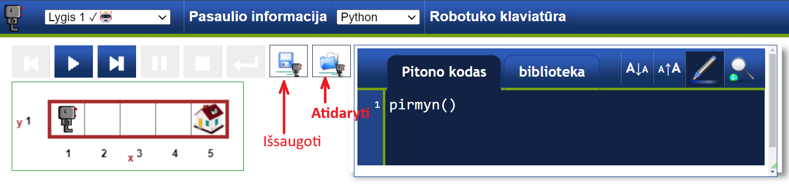
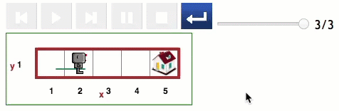

Kai kuriuose pasauliuose "Reeborg" gali turėti konkrečią vietą, į kurią turi nuvykti. Pavyzdžiui, atidarę 1 žingsnio pasaulį pamatysite Robotuko namų paveikslėlį.
Robotuko pasaulis yra paprastas tinklelis, todėl bet kurią tinklelio dalį galime nurodyti naudodami x ir y koordinates. Tai tas pats, kas Dekarto plokštuma iš matematikos pamokų! Šiame pasaulyje Robotukas turi grįžti namo, kuris yra ties x=5 ir y=1, arba (5,1).
Nors pirmųjų kelių pasaulių kodas yra gana paprastas, pereinant prie sudėtingesnių žingsnių verta išsaugoti savo kodą, kad galėtumėte jį panaudoti vėliau.
Norėdami išsaugoti kodą kompiuteryje, galite spustelėti išsaugojimo mygtuką. Norėdami atidaryti kodą, kurį išsaugojote kompiuteryje, naudokite atidarymo mygtuką.
Jei nematote išsaugojimo ir atidarymo mygtukų, gali tekti paspausti perkrovimo mygtuką, kaip parodyta paveikslėlyje:
Jei norite naudoti klaviatūros sparčiuosius klavišus, sukurtą kodą galite išsaugoti naudodami Ctrl-S kombinaciją (Cmd-S "Mac" kompiuteryje). Jei norite įkelti anksčiau išsaugotą kodą, naudokite Ctrl-O (Cmd-O "Mac" kompiuteryje).
Jei mokytojas paprašys parodyti jam savo kodą, kai pereisite lygį, gali būti naudinga atidaryti naują skirtuką kitų lygių darymui. Taip galėsite lengvai įveikti kelis lygius, kuriuos mokytojas galės peržiūrėti, kai pas jus ateis.
Atidaryk pirmą Robotuko aplinkos lygį.
Duokite Robotukui atitinkamas komandas, kad jis grįžtų namo!
Lygis 0: Robotuko eksperimentai Turinys Lygis 2: Daiktų paėmimas ir padėjimas